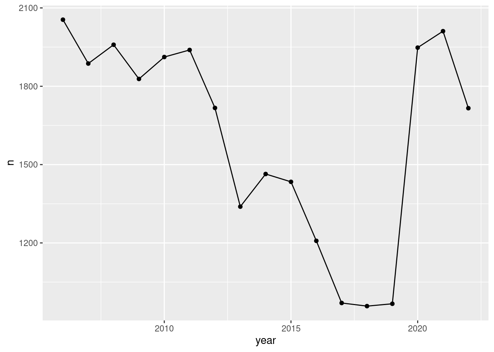
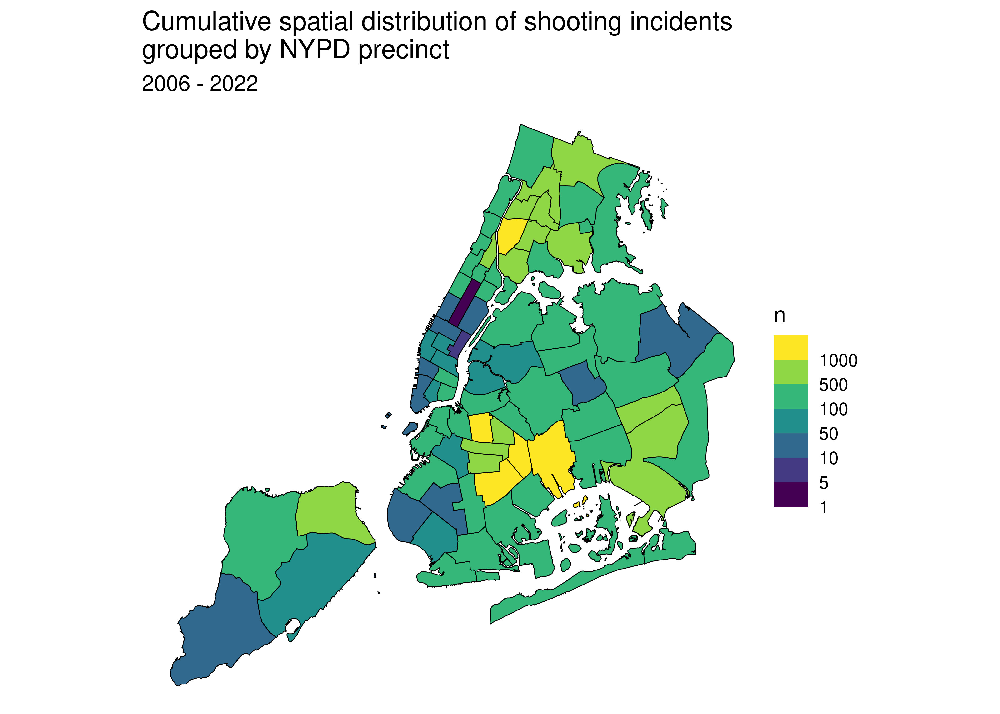
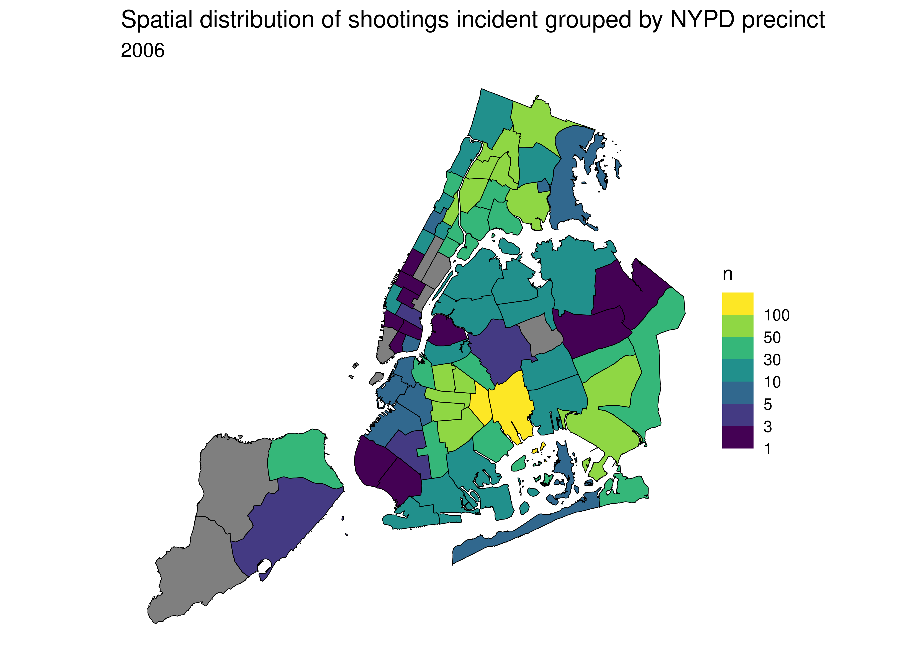
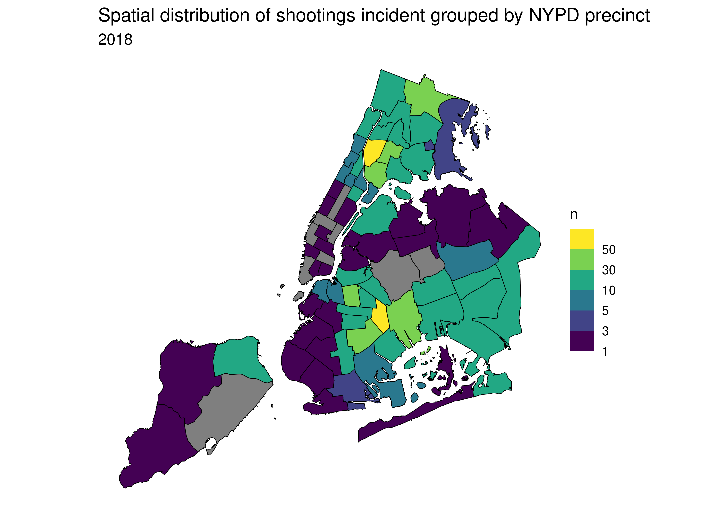

DS as a Field - NYPD shooting analysis report
Dataset description
Dataset used in this report : NYPD Shooting Incident Data (Historic)
The data set is a manually curated list of all shooting incidents in NYC from 2006 through the end of the previous calender year. It contains the coordinates of the shooting and the corresponding police precinct, demographic information about victim and perpetrator (if known) and information about the location of the incident.
Analysis objective
In a short analysis I will have a look a the trend of gun violence in the period 2006 - 2022 and its spatial distribution among the 77 NYPD precincts.
Data import and cleaning
Download of the dataset and the metadata
nypd_link_csv <- "https://data.cityofnewyork.us/api/views/833y-fsy8/rows.csv?accessType=DOWNLOAD"
nypd_link_json <- "https://data.cityofnewyork.us/api/views/833y-fsy8/rows.json?accessType=DOWNLOAD"
json <- fromJSON(nypd_link_json)
meta <- json$meta
data <- read_csv(nypd_link_csv) %>%
mutate(OCCUR_DATE = mdy(OCCUR_DATE))Variable descriptions
The metadata contains a short description of each column in the dataset.
col_meta <-
data.frame(col = meta$view$columns$name,
desc = meta$view$columns$description)
kable(col_meta)| col | desc |
|---|---|
| sid | NA |
| id | NA |
| position | NA |
| created_at | NA |
| created_meta | NA |
| updated_at | NA |
| updated_meta | NA |
| meta | NA |
| INCIDENT_KEY | Randomly generated persistent ID for each arrest |
| OCCUR_DATE | Exact date of the shooting incident |
| OCCUR_TIME | Exact time of the shooting incident |
| BORO | Borough where the shooting incident occurred |
| LOC_OF_OCCUR_DESC | |
| PRECINCT | Precinct where the shooting incident occurred |
| JURISDICTION_CODE | Jurisdiction where the shooting incident occurred. Jurisdiction codes 0(Patrol), 1(Transit) and 2(Housing) represent NYPD whilst codes 3 and more represent non NYPD jurisdictions |
| LOC_CLASSFCTN_DESC | |
| LOCATION_DESC | Location of the shooting incident |
| STATISTICAL_MURDER_FLAG | Shooting resulted in the victim’s death which would be counted as a murder |
| PERP_AGE_GROUP | Perpetrator’s age within a category |
| PERP_SEX | Perpetrator’s sex description |
| PERP_RACE | Perpetrator’s race description |
| VIC_AGE_GROUP | Victim’s age within a category |
| VIC_SEX | Victim’s sex description |
| VIC_RACE | Victim’s race description |
| X_COORD_CD | Midblock X-coordinate for New York State Plane Coordinate System, Long Island Zone, NAD 83, units feet (FIPS 3104) |
| Y_COORD_CD | Midblock Y-coordinate for New York State Plane Coordinate System, Long Island Zone, NAD 83, units feet (FIPS 3104) |
| Latitude | Latitude coordinate for Global Coordinate System, WGS 1984, decimal degrees (EPSG 4326) |
| Longitude | Longitude coordinate for Global Coordinate System, WGS 1984, decimal degrees (EPSG 4326) |
| Lon_Lat | Longitude and Latitude Coordinates for mapping |
| Borough Boundaries | |
| City Council Districts | |
| Police Precincts | |
| Zip Codes | |
| Community Districts |
For my analysis I will only keep two columns:
1.) PRECINCT and 2.) OCCUR_DATE
data <- data %>%
select(c(PRECINCT, OCCUR_DATE))Analysis and Visualization
Total shooting incidents per year 2006 - 2022
total_n <- data %>%
group_by(year(OCCUR_DATE)) %>%
count() %>%
rename(year = `year(OCCUR_DATE)`)
kable(total_n)| year | n |
|---|---|
| 2006 | 2055 |
| 2007 | 1887 |
| 2008 | 1959 |
| 2009 | 1828 |
| 2010 | 1912 |
| 2011 | 1939 |
| 2012 | 1717 |
| 2013 | 1339 |
| 2014 | 1464 |
| 2015 | 1434 |
| 2016 | 1208 |
| 2017 | 970 |
| 2018 | 958 |
| 2019 | 967 |
| 2020 | 1948 |
| 2021 | 2011 |
| 2022 | 1716 |
ggplot(total_n) +
aes(x = year, y = n) + geom_line() + geom_point()
From 2006 the number shooting incidents continuously declined until it bottomed around 2018. Gun violence then surged in 2020 due to generally difficult economic conditions, which aggravated in the aftermath of the coronavirus epidemic.
Cumulative spatial distribution of shooting incidents 2006 - 2022
#calculate no. of incidents per police precinct
total <- data %>% group_by(PRECINCT) %>% count()#create a map
prec_geo_url = 'https://opendata.arcgis.com/datasets/c35786feb0ac4d1b964f41f874f151c1_0.geojson'
#download geojson of NYPD police precincts
geo <- geojson_read(prec_geo_url, what = 'sp')
#get geojson dataframe
geo_tidy <- tidy(geo)The polygons corresponding to the police precincts are numbered 1:77 in the geojson file. Therefore, we need to map the actual precinct codes in the data to this range.
total$id <- 1:77
total$id <- as.character(total$id)Now the number of incidents per precinct can be joined with the geodata.
geo_tidy_all <- geo_tidy %>%
left_join(total, by = 'id')The geo_tidy dataframe is now ready to be used for the creation of the map.
ggplot(geo_tidy_all) +
geom_polygon(aes(x = long, y = lat, group = group, fill = n), color = 'black', size = 0.2) +
scale_fill_viridis_b(trans = "log", breaks = c(1, 5, 10, 50, 100, 500, 1000)) +
theme_void() +
labs(title = "Cumulative spatial distribution of shooting incidents \ngrouped by NYPD precinct",
subtitle = "2006 - 2022") +
coord_map()
kable(total %>% arrange(desc(n)) %>% select(c(PRECINCT, n)) %>% head())| PRECINCT | n |
|---|---|
| 75 | 1557 |
| 73 | 1452 |
| 67 | 1216 |
| 44 | 1020 |
| 79 | 1012 |
| 47 | 953 |
Gun violence is clearly spread over the whole city, with hot-spots in the Bronx and in East New York. The 75th and 73th precinct counted the highest number of shooting incidents over this period of time. The 75th precinct was once known as New York’s “Killing Ground”.
Spatial distribution of shooting incidents 2006
nypp_id = read_csv("https://data.cityofnewyork.us/resource/kmub-vria.csv")$precinct
#calculate no. of incidents per police precinct
total2006 <- data %>%
group_by(PRECINCT, year(OCCUR_DATE)) %>%
rename(year = "year(OCCUR_DATE)") %>%
count() %>%
rename(Precinct = PRECINCT) %>%
filter(year == 2006) %>%
ungroup() %>%
select(c(Precinct, n))
#left join as there 0 incidents in some precincts
total2006 <- left_join(data.frame(Precinct = nypp_id),
total2006,
by = c('Precinct')) %>%
mutate(n = ifelse(is.na(n), 0, n))
#aligned with polygons
total2006$id = as.character(1:77)geo_tidy_2006 <- geo_tidy %>%
left_join(total2006, by = 'id')ggplot(geo_tidy_2006) +
geom_polygon(aes(x = long, y = lat, group = group, fill = n), color = 'black', size = 0.2) +
scale_fill_viridis_b(trans = "log", breaks = c(1, 3, 5, 10, 30, 50, 100)) +
theme_void() +
labs(title = "Spatial distribution of shootings incident grouped by NYPD precinct",
subtitle = "2006") +
coord_map()
Spatial distribution of shooting incidents 2018
#calculate no. of incidents per police precinct
total2018 <- data %>%
group_by(PRECINCT, year(OCCUR_DATE)) %>%
rename(year = "year(OCCUR_DATE)") %>%
count() %>%
rename(Precinct = PRECINCT) %>%
filter(year == 2018) %>%
ungroup() %>%
select(c(Precinct, n))
#left join as there 0 incidents in some precincts
total2018 <- left_join(data.frame(Precinct = nypp_id),
total2018,
by = c('Precinct')) %>%
mutate(n = ifelse(is.na(n), 0, n))
#aligned with polygons
total2018$id = as.character(1:77)geo_tidy_2018 <- geo_tidy %>%
left_join(total2018, by = 'id')ggplot(geo_tidy_2018) +
geom_polygon(aes(x = long, y = lat, group = group, fill = n), color = 'black', size = 0.2) +
scale_fill_viridis_b(trans = "log", breaks = c(1, 3, 5, 10, 30, 50, 100)) +
theme_void() +
labs(title = "Spatial distribution of shootings incident grouped by NYPD precinct",
subtitle = "2018") +
coord_map()
Comparing the two maps from 2006 and 2018, clearly shows that there was a significant reduction in gun violence, also in and around the infamous 75th precinct.
Additional questions based on the findings
The above findings are merely descriptive but do not investigate potential causes for the observed distribution and surge of gun violence in New York City. Further investigations should link the shooting data to socioeconomic data.
Potential source of bias
The data set contains only shooting incidents that were recorded by the police and is a convenience sample in the sense that unreported shootings are registered. As a consequence analyses of this data set are potentially underestimating the number of shootings.